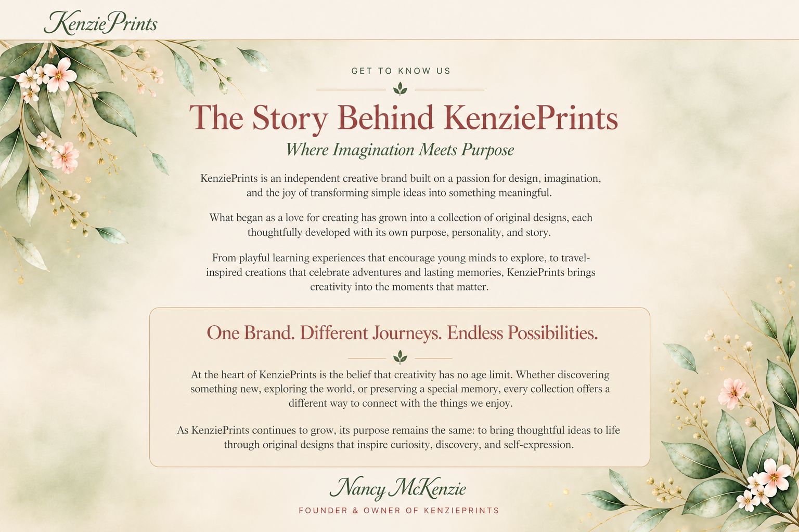

GET TO KNOW US
Where Imagination Meets Purpose
KenziePrints is an independent creative brand built on a passion for design, imagination, and the joy of transforming simple ideas into something meaningful.
What began as a love for creating has grown into a collection of original designs, each thoughtfully developed with its own purpose, personality, and story.
From playful learning experiences that encourage young minds to explore, to travel-inspired creations that celebrate adventures and lasting memories, KenziePrints brings creativity into the moments that matter.
At the heart of KenziePrints is the belief that creativity has no age limit. Whether discovering something new, exploring the world, or preserving a special memory, every collection offers a different way to connect with the things we enjoy.
As KenziePrints continues to grow, its purpose remains the same: to bring thoughtful ideas to life through original designs that inspire curiosity, discovery, and self-expression.